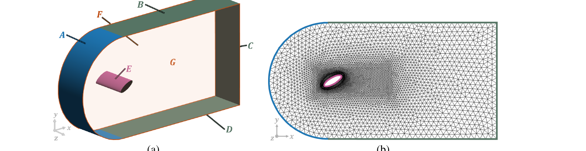
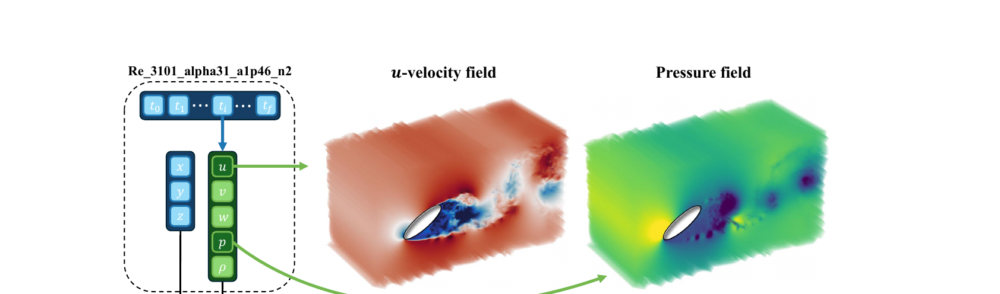

Abstract
Machine-learning surrogates are increasingly used to accelerate computational fluid dynamics (CFD), yet progress is limited by the lack of benchmarks capturing realistic, time-dependent turbulent flows. We introduce TurTLES, a 13 TB dataset of high-fidelity implicit large-eddy simulations of three-dimensional turbulent cylinder wakes in the shear-layer transition regime. The dataset contains 380 trajectories of 400 time steps each, with 3–9 million points per frame sampled on irregular point clouds, spanning variations in geometry, Reynolds number, and angle of attack. Unlike existing datasets, TurTLES captures fully three-dimensional turbulence with an active energy cascade driven by vortex stretching, combining (i) dense irregular meshes, (ii) long-horizon temporal dynamics, and (iii) physically realistic turbulent behavior. We benchmark state-of-the-art neural operators on long autoregressive rollouts and identify key failure modes, including temporal instability, loss of small-scale energy, and challenges in learning on large irregular domains. TurTLES provides a new standard benchmark for evaluating surrogate models in high-resolution, industrial-scale CFD regimes.
Key Properties
13 TB
High-fidelity 3D iLES data
380
Trajectories × 400 time steps
3–9 M
Points per frame, irregular mesh
4-D
Parameter space (a, n, Re, α)
Dataset Overview
TurTLES is constructed within a four-dimensional parameter space: geometry is parameterised through the super-ellipse (Lamé curve) family, with aspect ratio AR = a/b, exponent n ∈ {1, 2, 5, ∞} (diamond, circular, rounded rectangle, rectangle), Reynolds number Re ∈ [1000, 3900], and inflow angle of attack α ∈ [0°, 45°]. Samples are drawn from a Sobol’ sequence to evenly cover the hypercube. Each case is solved using a high-order Flux Reconstruction iLES scheme on a Gmsh-generated unstructured mesh extruded into the span-wise direction.


Data Structure
Each case is stored as a single set of node coordinates plus solutions at 400 time steps. A solution comprises the three-dimensional pressure p, density ρ, and velocity components (u, v, w). Snapshots are restricted to nodes inside the rectangular box x/D ∈ [−3, 10], y/D ∈ [−3.5, 3.5], z/D ∈ [0, 2π]. The sampling interval Δts is chosen so that the inertial range of the turbulence spectrum is retained while keeping storage tractable.

Re_3101_alpha31_a1p46_n2.
Contributions
- Dense irregular 3D data. Millions of points per frame on unstructured meshes, beyond the resolution of regular-grid or coarse point-cloud benchmarks.
- Long-horizon evaluation. Hundreds of autoregressive time steps in chaotic, geometry-dependent wakes.
Benchmarks
We evaluate state-of-the-art neural operators on long autoregressive rollouts and identify recurring failure modes: temporal instability, loss of small-scale energy, and degradation on large irregular domains. Full results, training protocols, and evaluation metrics are reported in the paper.